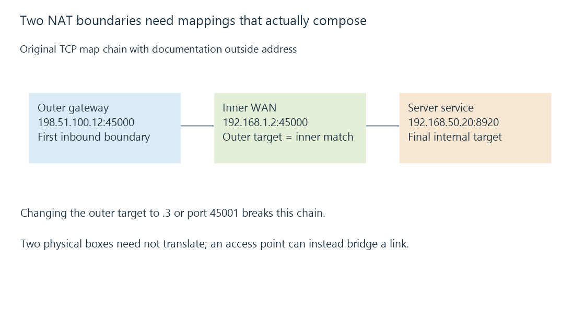

Double NAT and two translation boundaries
Double NAT places two translation boundaries in a connection path, requiring their endpoint mappings and state to compose before outside traffic can reach an internal server.
An internet gateway can have another router behind it. If both translate between different address realms, the server’s path crosses double NAT.
A working rule on the inner router then describes only part of an outside connection.
Name the two inside-facing realms
Use this original topology:
- Outer gateway: outside documentation address 198.51.100.12, inside interface 192.168.1.1.
- Inner router: WAN-side address 192.168.1.2, inside interface 192.168.50.1.
- Emby service: 192.168.50.20:8920.
The inner router’s WAN is still inside the outer gateway’s realm. It is not the public-facing endpoint in this exercise.

The two mappings compose
This original reduced map chain targets a declared internal HTTPS listener:
{
"protocol": "tcp",
"outerMap": {
"from": {"address": "198.51.100.12", "port": 45000},
"to": {"address": "192.168.1.2", "port": 45000}
},
"innerMap": {
"from": {"address": "192.168.1.2", "port": 45000},
"to": {"address": "192.168.50.20", "port": 8920}
}
}
The outer destination becomes the inner rule’s arriving endpoint. Protocol, address and port need to match at that boundary.
If the outer gateway sends to 192.168.1.3, the inner router at .2 never receives the request. If it sends to .2:45001 while the inner rule matches 45000, the endpoint also fails to compose.
Adding only the inner rule leaves the outer inbound stage unresolved.
Outbound success can hide the second boundary
An inside client initiating an internet request can create state at both translating gateways. Replies then follow those associations back.
That successful browsing path does not demonstrate an unsolicited inbound Emby request has a matching path through both gateways.
The return path also needs the correct state and routing context. An asymmetric return through another gateway can fail despite correct-looking inbound rule text.
Another Wi-Fi box need not be another NAT
A device operating as a bridge/access point can extend a link without adding a translating routed realm.
A device operating as a router can instead create another subnet and policy boundary. The physical presence of two boxes is not sufficient evidence of double NAT.
Changing that operating mode has broader network effects; this explanation identifies the path rather than prescribing a mode change.
Control of the outer layer matters
If the outer translation belongs to an ISP, the household may not have the ability to install its mapping. Carrier-grade NAT develops that case.
See Also
- NAT and address/port translation state
- Port forwarding and the complete inbound path
- Carrier-grade NAT and control of inbound mappings
- How a home media network carries an Emby stream